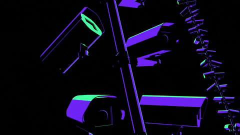

In 2017, the ministry recruited around 300 volunteers who agreed, in exchange for a €25 Amazon voucher 🤑, to have their names and two biometric photos stored in a database and to carry a transponder around with them. This allowed authorities to know at what day and time they crossed through the station.
On August that year, the project, known as “Safety Station Südkreuz”, took off.
(seeBig Brother in Berlin, Politico, J. Delcker, 2018)